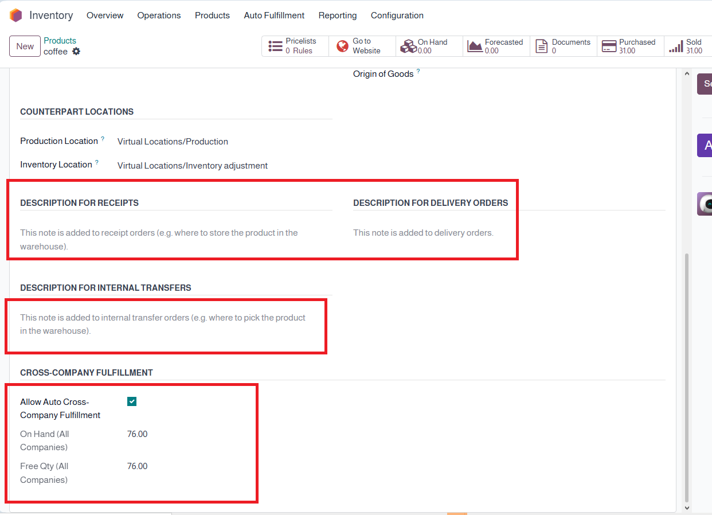

Odoo 18
Multi-Company
Inventory Automation
Product Total Stock All Companies
Get full stock visibility across all companies and automate shortage fulfillment with smart intercompany replenishment and internal transfer logic.
Enterprise Ready
Professional Multi-Company Workflow
Overview
This module helps companies operating in multi-company Odoo environments view total stock across all companies and automatically fulfill stock shortages. When a delivery cannot be completed from the current company, the system can intelligently locate available stock in other companies and trigger the right replenishment flow.

●
All Companies
Stock Visibility
+
Auto
Shortage Fulfillment
■
Smart
Intercompany Logic
□
Real-Time
Inventory Decisions
Key Features
✔ Total Stock Across All Companies
Displays total on-hand and free quantity across all companies from product form and list views.
✔ Automatic Stock Shortage Handling
Detects shortages during transfer validation and starts an automatic fulfillment workflow when stock exists elsewhere.
✔ Internal and Intercompany Transfers
Supports both same-company warehouse movement and multi-company replenishment scenarios.
✔ Dashboard & Logs
Includes dashboard KPIs, charts, recent logs, and filtering by company, type, state, and date.
✔ Smart Allocation
Uses available stock from the best source company or warehouse to reduce delivery delays and manual work.
✔ Odoo Workflow Integration
Works inside standard Odoo Inventory, Sales, and Purchase flows without changing user habits.
How It Works
Step 1: User validates an outgoing delivery.
Step 2: The module checks current company stock availability.
Step 3: If there is a shortage, the system searches other companies and warehouses.
Step 4: It creates internal or intercompany replenishment automatically.
Step 5: Logs, KPIs, and trend analytics are updated on the dashboard.
Business Value
Faster Deliveries
Reduce delays when stock is missing in one company.
Lower Manual Work
Automates transfer decisions and replenishment logic.
Better Visibility
See stock availability across the whole group instantly.
Scalable Operations
Ideal for holdings, branches, franchises, and shared warehouses.
Screenshots

Dashboard View
KPIs, trends, top products, top companies, and fulfillment analytics.

Product Stock Across Companies
See total stock and free quantity across all companies from product views.

Auto Fulfillment Workflow
Automatic handling of shortages with intercompany logic and logs.
Technical Highlights
- Extends product and stock models to compute stock across companies
- Supports automated fulfillment and dashboard reporting
- Includes charts, filters, KPIs, and recent fulfillment logs
- Designed for Odoo 18 multi-company inventory workflows
Overview Video
Watch how the module automatically handles inventory shortages and intercompany fulfillment in Odoo.

Support & Customization
Need customization, integration, or deployment help? This module can be adapted for complex enterprise stock flows, branch logistics, and advanced multi-company operations.
Sirelkhatim Technologies — Arabic & English support available
العربية (ملخص)
هذا الموديول يتيح عرض إجمالي المخزون عبر جميع الشركات داخل أودو، مع إمكانية التعامل التلقائي مع نقص الكميات عن طريق إنشاء تحويلات داخلية أو بين الشركات.
- عرض إجمالي الكمية والمتاح الحر عبر جميع الشركات
- دعم بيئات الشركات المتعددة
- تحويل تلقائي عند نقص المخزون
- لوحة مؤشرات ورسوم بيانية وسجل للحركات
- تقليل العمل اليدوي وتحسين سرعة تنفيذ الطلبات
Related Modules

Multi-Company Stock Auto Fulfillment
Advanced automatic shortage fulfillment with dashboard, charts, logs, and intercompany stock routing.
View Module

BioStar Attendance Connector
Connect Suprema BioStar attendance devices with Odoo HR Attendance using secure sync and scheduling tools.
View Module

More Odoo Apps by Sirelkhatim
Explore more custom Odoo modules for inventory, HR, portals, automation, and enterprise workflows.
Browse All Apps
Built for modern multi-company inventory teams.